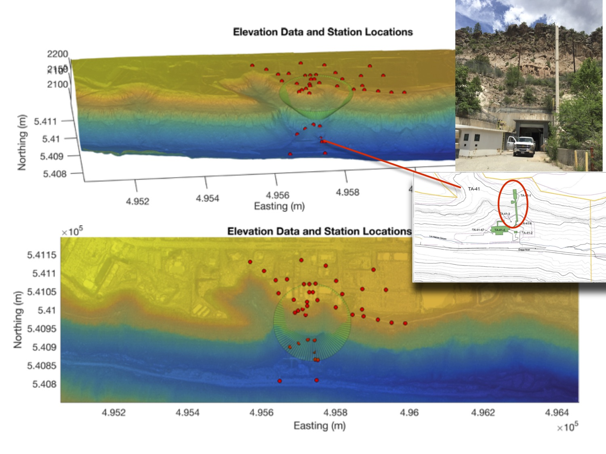

Here is a photo of some of our group members in the brand new Physics, Astronomy, and Interdisciplinary Science Building at UNM!
Prospective students: I am always looking for motivated graduate and undergraduate students who are interested in using physics, math, and numerical modeling to solve geologic problems. Please send me an email.
Roy Research
Group
Current group members:
- Undergraduate students: W. Crockett, J. Sorenson, B. Spears, V. Enders
- Graduate students: Katherine Cosburn, Meghan Lentz
Previous group members:
- Postdocs: Dr. Joya Tetreault (now at NGU in Norway)
- Graduate students: Megan Lewis (PandA), Nicolas George (UNM EPS) M. Dichter (MS; now at Applied Technology Associates), Jon MacCarthy (MS; now at LANL); K. Sanders, C. Callahan (now at Grand Valley State Univ)
- Undergrad senior theses:A. Johnson, S. Gold, R. Osuna Orozco, C. Peterson, N. Natek, D. Hayes
- Other: R. Dunagin, Mark Fleharty (UNM Computer Science) - Linux system administration and scientific programming
Current research themes/projects:
- Area 1: Patterns of Cenozoic tectonic, volcanic and magmatic activity in the western US
- Area 2: What can we learn about lithospheric evolution, structure, and rheology from modeling deformation patterns observed at the earth's surface, for example, from geologic and geodetic studies?
- Area 3: Combining multiple datasets, e.g. the flux of cosmic ray muons, gravity, seismic data, in joint-inversions for Earth structure. Graduate student Katherine Cosburn is leading an effort to use machine learning for estimating subsurface structure 
- Area 4: Most recently, I have been interested in volcanoes--specifically, how magma deforms, flows, mixes within and beneath volcanic systems. We have also been thinking about processes that shape stratovolcanoes.

So far, this project has been contributed to by three undergraduate students working with me on senior honors theses.


{kind=link}


Current Grants (and funding source):
- What controls the shape of composite-cone volcanos? (UNM - Research allocations committee)
- Destroying continental plates: the role of thermal and chemical disequilibrium during melt-rock interaction (UNM - Women in STEM - NSF Advance)